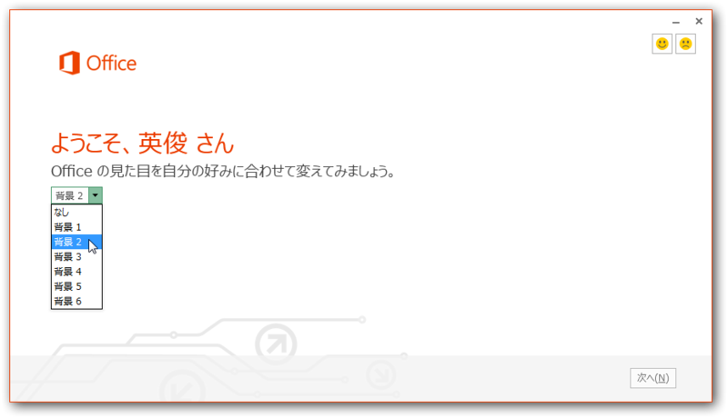

さっそく「Microsoft Office カスタマー プレビュー」をインストールしてみた
公開日：
「Microsoft Office 2013」（Office 15）の一般向けプレビューが公開されたみたいですね（独り言：今日の記者説明会の内容ってこれだったのか！）。
早速入れてみました。これで最新のオフィスを年内ぐらいはタダで使える！（ぉ
ダウンロード
どうでもいいのだけど、タッチ操作だとこの画面に行き着くのがとても大変。ボタンがピョコピョコ動くのはオシャレ（笑）なのだけど、せっかくタッチ対応を謳うのだから、Web サイトもタッチでテストしてほしいです。
インストール

それでは早速インストール！

まずはお約束。

なんか Apple のできそこないみたいなビデオが流れてカッコイイ。新しいオフィスの特徴はタッチ・スタイラス対応（要はスレートPCのサポート）と、「一つのIDで、どこからでも」というところなのかな。

というわけで、オフィスのポテンシャルを最大限に発揮するには Windows Live ID が必要です。……と Web サイトには書かれているけれど、一応なくてもいけるっぽい。まぁ、インストール時にオンラインとは限らないしね。

ちなみに、新しいオフィスはローミング（Roaming）機能で設定が同期されるとのこと。このデザイン設定も同期されるのかなぁ。 Windows 8 はクソだという評判がすでに立ち始めているけれど、個人的にはこのローミング機能には期待していいと思う*1。
SkyDrive へドキュメント保存。今のオフィスでもできんことはないけれど、それがよりシームレスに統合されるということなのかな。


今回のプレビュー版は“クイック実行”という仕組みで実行される。前のバージョンも試用版は同じ仕組だっけ。プログラムがキャッシュされて、ストリーミングっぽく実行されるのだそうで、フルインストールするよりもお手軽で、すぐに利用できるということらしい。
インストールされたよ！ 注目は個人的要らない子「Outlook」の進化ですかね……。